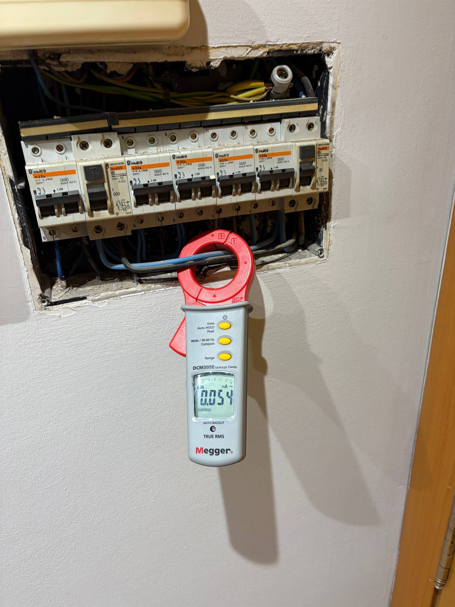

Pedir presupuesto →
Pedir presupuesto →
El diferencial de la vivienda saltaba de forma repetida. La causa eran los armónicos: las cargas electrónicas de la instalación generan corrientes que un diferencial convencional puede interpretar como fugas y desconectar.
Nuestro técnico midió las corrientes de fuga con pinza amperimétrica directamente en el cuadro y retiró el ICP y el diferencial afectados.
Para que el problema no vuelva a aparecer, recomendamos instalar un diferencial de clase A, que está diseñado para funcionar con las cargas electrónicas de una vivienda actual.

